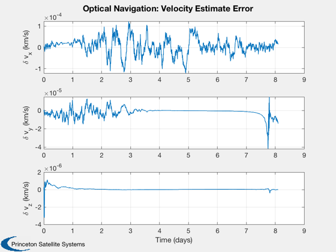

Contents
Demonstrate optical navigation in earth geosynchronous transfer orbit.
Uses an earth sensor and a star sensor. The earth sensor measures the earth chord. The star sensor measures an angle from the nadir vector to the star.
The gravity model is point mass without any perturbations or disturbances such as solar or aerodynamics.
It is interesting to try the sim without the update step. If you do this you will find that the error gets extremely large after 4 orbits. This happens because the covariance grows and eventually at perigee, the mean orbit will be hyperbolic.
The star sensor assumes that it can see multiple stars. This can be accomplished by a wide field of view sensor or by an articulated sensor.
This demo uses the new UKF framework with separate propagate and measurement update functions.
Things to try:
1. Change the orbit 2. Change the sensor noise 3. Change the star vector 4. Add disturbances. 5. Use only the earth chord measurement 6. Turn off the update step 7. Vary the initial covariances
Since version 2014.1
%--------------------------------------------------------------------------
%-------------------------------------------------------------------------- % Copyright (c) 2014 Princeton Satellite Systems, Inc. % All rights reserved. %--------------------------------------------------------------------------
Constants
%----------- rE = Constant('equatorial radius earth'); mu = Constant('mu earth'); radToDeg = pi/180; % Set the seed for the random number generators. % If the seed is not set each run will be different. %--------------------------------------------------- rng('default'); rng(0);
User inputs
%------------- % Script control %--------------- useStarSensor = 1; % 1 = use the star sensor useHorizonSensor = 1; % 1 = use the horizon sensor % Separation angle between stars %------------------------------- angleStarSensor = 45; % Time control %------------- nOrbits = 1; nSamples = 2000; % Covariance control %------------------- dR = 2e-3; % GPS position accuracy, 1 sigma (km) dV = 4e-6; % The initial velocity error 1 sigma (km/s) fQ0 = 0.0011; % The model covariance will be this fraction of the initial acceleration % Roughly the effect of the J2 term qR = [1; 1; 1]*1e-8; % Uncertainty in the derivative states sigmaAltitude = 0; % Earth chord altitude variation hPerigee = 400; % km hApogee = 327670; % km inclination = 0; % degrees hCO2 = 40; % CO2 layer altitude sigmaNadirStar = 1e-6; % Angle noise for the star sensor % Set up the star sensor unit vectors %------------------------------------ c = CosD(angleStarSensor); s = SinD(angleStarSensor); uStar = Unit([0 c -c;-1 s s;1 1 1]); % Unit vectors to the stars nStarMeas = size(uStar,2);
Orbit
%------- i = inclination*radToDeg; % Inclination (rad) [a, e] = RPRA2AE(rE + hPerigee, rE + hApogee); % Semi-major axis and eccentricity p = Period(a); % Orbit period dT = nOrbits*p/nSamples; el = [a i 0 0 e 0]; % Generate the initial orbit %--------------------------- [r0, v0] = El2RV(el); x0 = [r0;v0];
Optical navigation setup
%-------------------------- % Build the optical navigation data structures %--------------------------------------------- % The initial covariance %----------------------- p0 = diag([dR dR dR dV dV dV].^2); % Base the initial model covariance on a fraction of the gravitational % acceleration %--------------------------------------------------------------------- a0 = mu*r0/Mag(r0)^3; q0 = diag([qR; (fQ0*a0).^2]); dRHSEst = struct('mu',mu,'a',[0;0;0]); dRHS = struct('mu',mu,'a',[0;0;0]); % Initialize the Unscented Kalman Filter %--------------------------------------- ukf = KFInitialize( 'ukf','f',@RHSOrbit,'alpha',100,... 'kappa',0,'beta',2,'dT',dT,'fData',dRHSEst,... 'p',p0,'q',q0,'x',[r0;v0], 'm',[r0;v0]); % The measurement data structure %------------------------------- dEarthChordSim.cO2Altitude = hCO2; % The CO2 layer dEarthChordSim.rE = rE; dEarthChord = dEarthChordSim; % Nondimensionalize for the estimator %------------------------------------ dEarthChord.rE = dEarthChord.rE; dEarthChord.cO2Altitude = dEarthChord.cO2Altitude; % Add noise to the simulation data structure %------------------------------------------- sigmaChord = atan(sigmaAltitude/Mag(r0)); dEarthChordSim.angleNoise = 0; % This is generic noise added to the chord measurement dEarthChordSim.altNoise = sigmaAltitude; % Error in the altitude of the CO2 layer dNadirStar.uStar = uStar; dNadirStarSim = dNadirStar; dNadirStarSim.angleNoise = sigmaNadirStar;
Optical navigation simulation
%------------------------------- if( useHorizonSensor ) nHorizMeas = 1; jStar = 2:nStarMeas+1; else nHorizMeas = 0; jStar = 1:nStarMeas; end % Run the optical navigation %--------------------------- rEst = zeros(3,nSamples); vEst = zeros(3,nSamples); y = zeros(nHorizMeas+nStarMeas,nSamples); r = zeros(3,nSamples); v = zeros(3,nSamples); x = x0; t = 0; for k = 1:nSamples % Plotting storage %----------------- rEst(:,k) = ukf.m(1:3); vEst(:,k) = ukf.m(4:6); r(:,k) = x(1:3); v(:,k) = x(4:6); % Numerically integrate the truth orbit %-------------------------------------- x = RK4(@RHSOrbit,x,dT,0,dRHS); % Earth sensor %------------- if( useHorizonSensor ) ukf.y(1).data = MeasEarthChord( x, dEarthChordSim ); ukf.y(1).param.hFun = @MeasEarthChord; ukf.y(1).param.hData = dEarthChord; ukf.y(1).param.r = sigmaChord^2; y(1,k) = ukf.y(1).data; jM = 2; else jM = 1; end % Star sensor %------------ if( useStarSensor ) ukf.y(jM).data = MeasNadirStar( x, dNadirStarSim ); ukf.y(jM).param.hFun = @MeasNadirStar; ukf.y(jM).param.hData = dNadirStar; ukf.y(jM).param.r = sigmaNadirStar^2*eye(3); y(jStar,k) = ukf.y(jM).data; end % Propagate the orbit %-------------------- ukf.t = t; ukf = UKFPredict( ukf ); % Incorporate the measurements % ---------------------------- if( useHorizonSensor || useStarSensor ) ukf = UKFUpdate( ukf ); end t = t + dT; end
Plot
%------ [t, tL] = TimeLabl((0:(nSamples-1))*dT); nP = {'[1 4]' '[2 5]' '[3 6]'}; Plot2D(t,[r;rEst],tL,{'x (km)' 'y (km)' 'z (km)'}, 'Optical Navigation: Position Estimate and Truth model', 'lin',nP) legend('Truth', 'Estimate') Plot2D(t,r-rEst,tL,{'\delta x (km)' '\delta y (km)' '\delta z (km)'}, 'Optical Navigation: Position Estimate Error') Plot2D(t,v-vEst,tL,{'\delta v_x (km/s)' '\delta v_y (km/s)' '\delta v_z (km/s)'}, 'Optical Navigation: Velocity Estimate Error') % Plot measurement if there are any %---------------------------------- if( useStarSensor || useHorizonSensor ) yL = cell(1,nStarMeas+nHorizMeas); yL{1} = 'Earth Chord (rad)'; for k = 1:nStarMeas yL{k+1} = sprintf('Nadir/Star %d',k); end Plot2D(t,y,tL,yL, 'Optical Navigation: Measurements') end %--------------------------------------